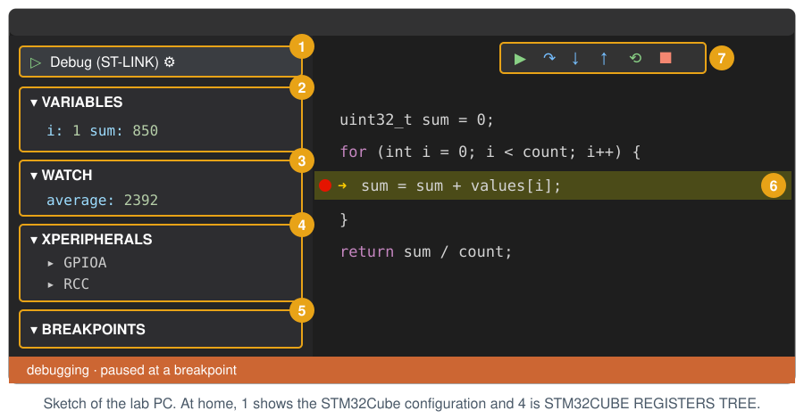
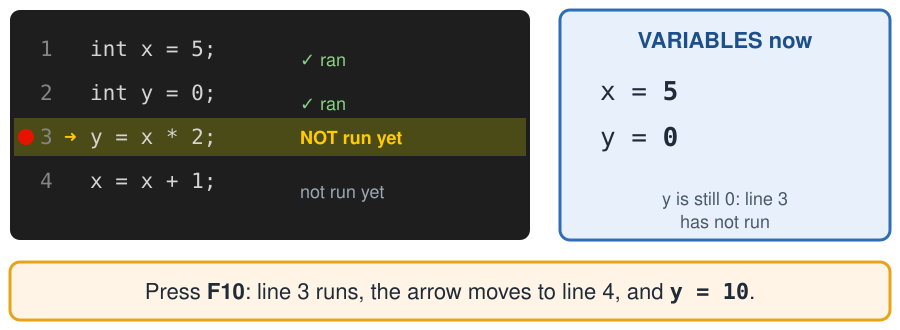
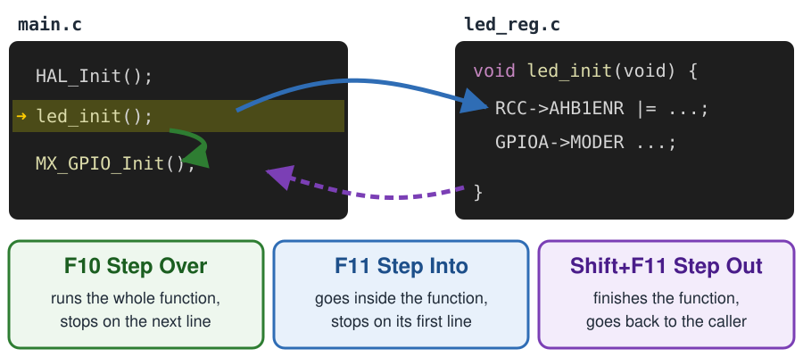
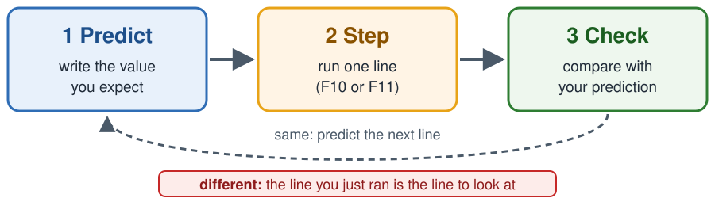

Debugging Guide: Breakpoints, Stepping and Registers
EE5203 Microprocessors — pause your program on the board and look inside it
The board runs your program very fast. The debugger pauses it, so you can see the values inside it. Then you run it one line at a time and watch what each line changes.
Use the debugger to see what your program really does, not what you think it does.
1. Where to look

| Area | What it shows | |
|---|---|---|
| 1 | Debug configuration | Which debugger starts. Lab: Debug (ST-LINK). Home: STM32Cube: STM32 Launch ST-Link GDB Server. |
| 2 | VARIABLES | The variables of the function you are in now. |
| 3 | WATCH | Expressions you add yourself with +, for example average or samples[3]. |
| 4 | Register panel | Peripheral registers. Lab: XPERIPHERALS. Home: STM32CUBE REGISTERS TREE. |
| 5 | BREAKPOINTS | All your breakpoints. Untick one to switch it off. |
| 6 | Editor | Red dot = breakpoint. Yellow line = the next line to run. |
| 7 | Debug toolbar | Continue, Step Over, Step Into, Step Out, Restart, Stop. |
2. Start and stop
| Lab PC | Home laptop | |
|---|---|---|
| Build only | Ctrl+Shift+B | F7 |
| Start debugging | F5 | Run and Debug → STM32Cube: STM32 Launch ST-Link GDB Server |
| Register panel | XPERIPHERALS | STM32CUBE REGISTERS TREE |
Starting the debugger builds the program first, then loads it into the board. It stops at the first line of main. Press Continue (F5) to run.
To end, press Stop (Shift+F5).
You may need to press Fn together with the F keys: Fn+F5, Fn+F10, Fn+F11.
3. Pause with a breakpoint
Click left of a line number. A red dot appears. Press Continue (F5): the program runs until it reaches that line, then it pauses.

The debugger pauses before the yellow line. The values you see are from the lines above it. This is the most common mistake in the lab.
Put the breakpoint on a line with code, not on an empty line or a comment.
4. Move one step

led_init();.| Key | Button | Use it when |
|---|---|---|
| F5 | Continue | You want to run to the next breakpoint. |
| F10 | Step Over | You trust the function on this line, or the line has no function. |
| F11 | Step Into | You want to see what happens inside your function. |
| Shift+F11 | Step Out | You are inside a function and want to go back to the caller. |
| Ctrl+Shift+F5 | Restart | You want to start again from main. |
| Shift+F5 | Stop | You are done. |
F11 on a HAL line (for example HAL_Delay(200);) opens ST’s HAL code. Press Shift+F11 to go back, then use F10 on HAL lines.
5. Look at values
- VARIABLES: open Local. You see the variables of the current function.
- Hover: move the mouse over a variable in the editor. Its value appears.
- WATCH: click + and type a name or an expression, for example
samples[3]oraverage. It stays there while you step. - Registers: open the register panel (area 4), then the peripheral, the register and the field. Example: GPIOA → MODER → MODER5.
Values change only while the program is paused. While it runs, the panels do not update.
6. Predict, step, check
Do not press keys and hope. Before each step, say what you expect.

Example. In this example, average_samples gets the short array {500, 700, 300, 900}. It is not your lab data. Put a breakpoint on the line in your loop that adds to sum, for example sum = sum + values[i];. Each Continue (F5) runs one loop and stops on the same line.
| Stop | i |
sum you see |
Why |
|---|---|---|---|
| 1 | 0 | 0 | The line has not run yet. |
| 2 | 1 | 500 | 0 + 500 |
| 3 | 2 | 1200 | 500 + 700 |
| 4 | ? | ? | Predict it, then press F5. |
i = 3 and sum = 1500, because 1200 + 300 = 1500.
7. If something goes wrong
| What you see | What to do |
|---|---|
| The program does not stop at my breakpoint. | The line is never reached (for example inside an if that is false). Or the build failed: read the terminal. |
| During debugging, the dot is grey and hollow. | The line has no code, or its .c file is not in target_sources. |
| I pressed F10 but nothing changed. | Read the yellow line again: it is the next line. Press F10 once more. |
| F10 jumped over my function. | Use F11 on that line to go inside. |
| VARIABLES does not show my variable. | It belongs to another function. Use WATCH, or step into that function. |
| The register panel is empty. | Pause the program first. At home it appears only during debugging. |
| LD2 does not blink while I step. | Normal: the processor is paused. Press Continue (F5). |
Error: ... ST-LINK or the board is not found. |
Unplug and plug the board, then start again. Use a data cable. |